PCA
John Blischak
2017-08-14
Last updated: 2017-08-16
Code version: 4777c8a
Setup
library("Biobase")
library("cowplot")
library("dplyr")
library("edgeR")
library("ggplot2")
library("readr")
library("stringr")
library("tidyr")
theme_set(theme_cowplot())
source("../code/functions.R")Import molecules.
molecules <- read_tsv(gzfile("../data/molecules.txt.gz"))
dim(molecules)[1] 1247 54797molecules[1:5, 1:10]# A tibble: 5 × 10
sample experiment well id lane
<chr> <chr> <chr> <chr> <chr>
1 03172017-D08_S428_L004_R1_001 03172017 D08 S428 L004
2 03312017-B03_S975_L007_R1_001 03312017 B03 S975 L007
3 03232017-F05_S641_L005_R1_001 03232017 F05 S641 L005
4 04072017-E08_S536_L008_R1_001 04072017 E08 S536 L008
5 03172017-D12_S432_L008_R1_001 03172017 D12 S432 L008
# ... with 5 more variables: WBGene00022277 <int>, WBGene00022276 <int>,
# WBGene00022278 <int>, WBGene00022279 <int>, WBGene00022275 <int>colnames(molecules)[1:20] [1] "sample" "experiment" "well" "id"
[5] "lane" "WBGene00022277" "WBGene00022276" "WBGene00022278"
[9] "WBGene00022279" "WBGene00022275" "WBGene00044345" "WBGene00021677"
[13] "WBGene00021678" "WBGene00000812" "WBGene00021683" "WBGene00021679"
[17] "WBGene00021684" "WBGene00021682" "WBGene00021676" "WBGene00189949"Import annotation.
anno <- read_tsv("../data/batch1_qc.txt",
col_types = cols(ERCC = col_character()))Warning: 1 parsing failure.
row col expected actual
961 -- 13 columns 1 columns# Cleanup ERCC column
anno$ERCC <- ifelse(is.na(anno$ERCC), "Not added", anno$ERCC)
anno$ERCC <- factor(anno$ERCC, levels = c("Not added", "1:100000", "1:50000"),
labels = c("Not added", "100x dilution", "50x dilution"))
anno$ERCC <- as.character(anno$ERCC)
dim(anno)[1] 961 13colnames(anno) [1] "experiment" "well" "cell_number" "concentration"
[5] "tra1.60" "individual.1" "individual.2" "individual.3"
[9] "individual.4" "fly" "worm" "ERCC"
[13] "index" Merge the data sets.
mol_anno <- merge(molecules, anno, by = c("experiment", "well"))
stopifnot(nrow(mol_anno) == nrow(molecules))Remove samples with bad cell number or TRA-1-60.
mol_anno <- mol_anno %>%
filter(cell_number == 1, tra1.60 == 1)
dim(mol_anno)[1] 1129 54808Separate by source.
mol_ce <- mol_anno %>% select(experiment:lane, cell_number:index, starts_with("WBGene"))
mol_dm <- mol_anno %>% select(experiment:lane, cell_number:index, starts_with("FBGn"))
mol_ercc <- mol_anno %>% select(experiment:lane, cell_number:index, starts_with("ERCC"))
mol_hs <- mol_anno %>% select(experiment:lane, cell_number:index, starts_with("ENSG"))ERCC
Remove dashes in column names.
colnames(mol_ercc) <- str_replace(colnames(mol_ercc), "-", "")Remove samples that did not receive ERCC spike-in and change the name.
mol_ercc <- mol_ercc %>% filter(ERCC != "Not added") %>% rename(annoERCC = ERCC)Remove zeros.
mol_ercc <- mol_ercc %>%
select_if(function(col) is.character(col) || sum(col) > 0)
dim(mol_ercc)[1] 518 101Convert to matrix.
mol_ercc_mat <- mol_ercc %>%
select(starts_with("ERCC")) %>%
tOnly keep ERCC which are observed in at least 50% of the samples.
present <- function(x, percent = 0.50) mean(x > 0) >= percent
mol_ercc_mat <- mol_ercc_mat[apply(mol_ercc_mat, 1, present), ]
dim(mol_ercc_mat)[1] 30 518mol_ercc_cpm <- cpm(mol_ercc_mat, log = TRUE)
hist(rowMeans(mol_ercc_cpm))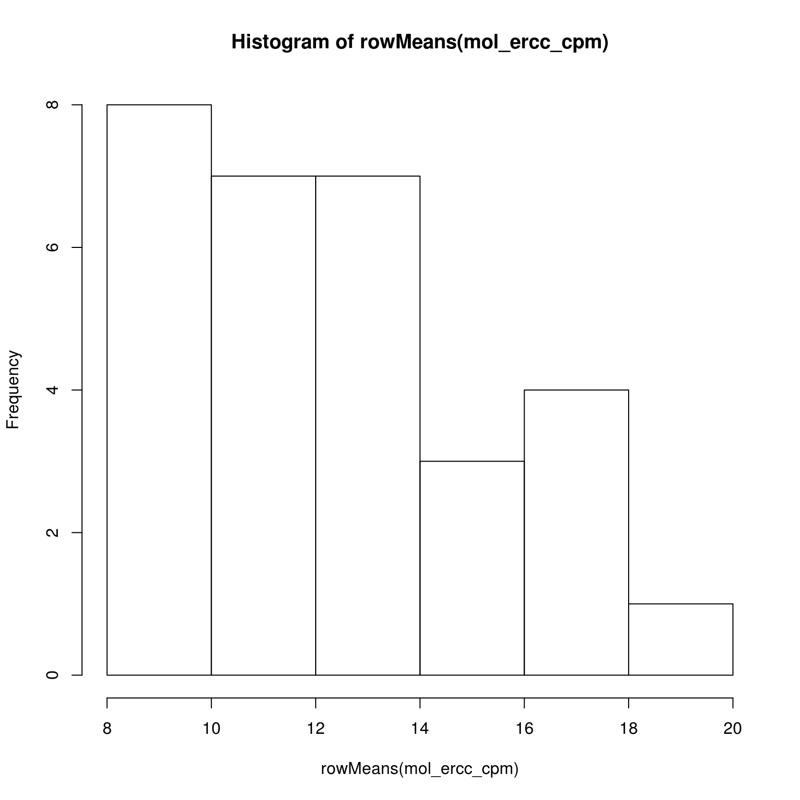
pca_ercc <- prcomp(t(mol_ercc_cpm), scale. = TRUE)
pca_ercc <- cbind(mol_ercc %>% select(experiment:index), pca_ercc$x)ggplot(pca_ercc, aes(x = PC1, y = PC2, color = experiment)) +
geom_text(aes(label = id))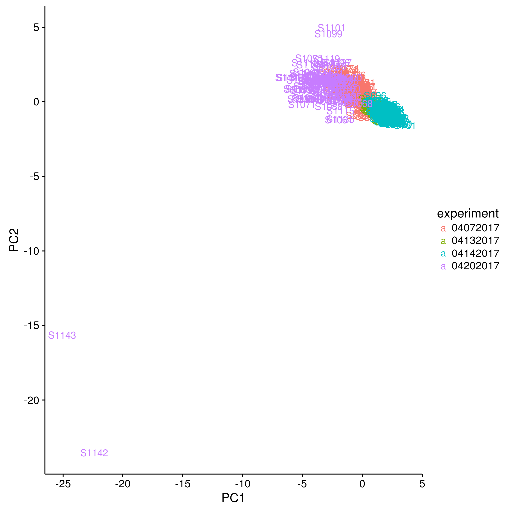
ggplot(pca_ercc, aes(x = PC3, y = PC4, color = experiment)) +
geom_text(aes(label = id))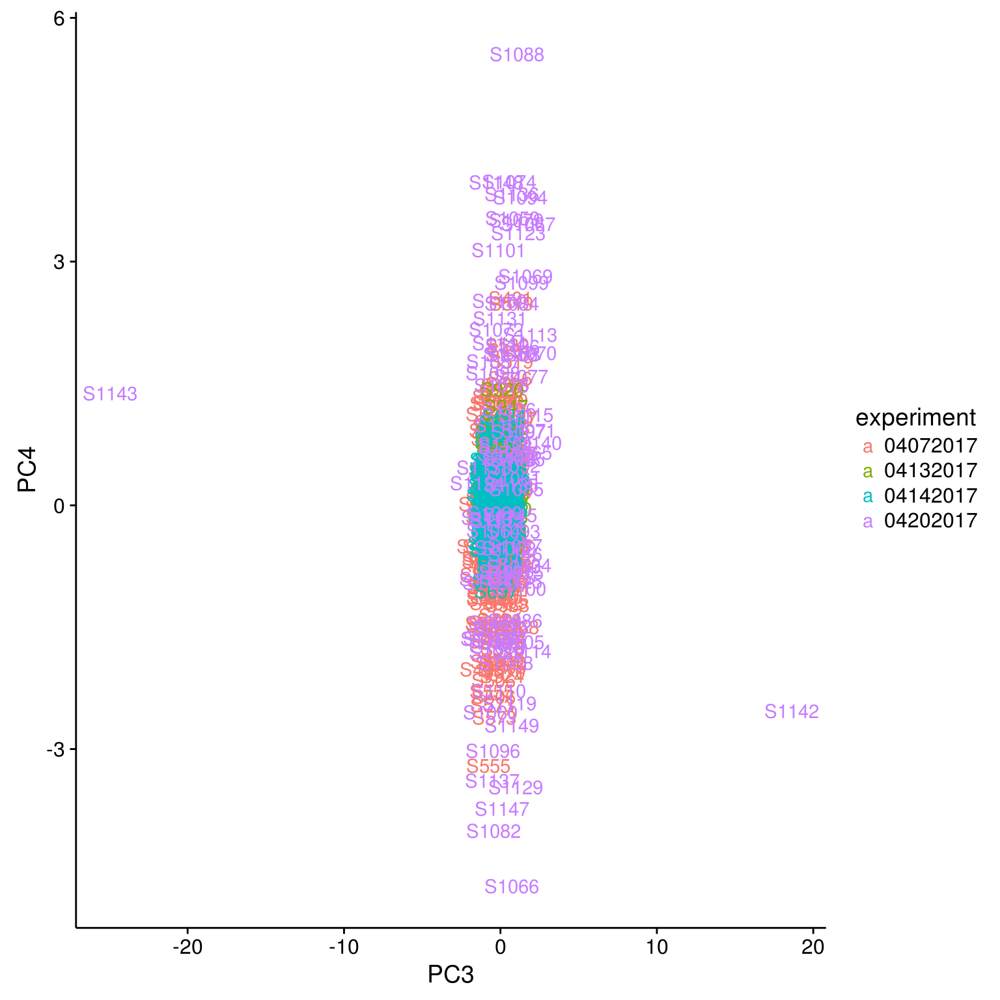
ggplot(pca_ercc, aes(x = PC5, y = PC6, color = experiment)) +
geom_text(aes(label = id))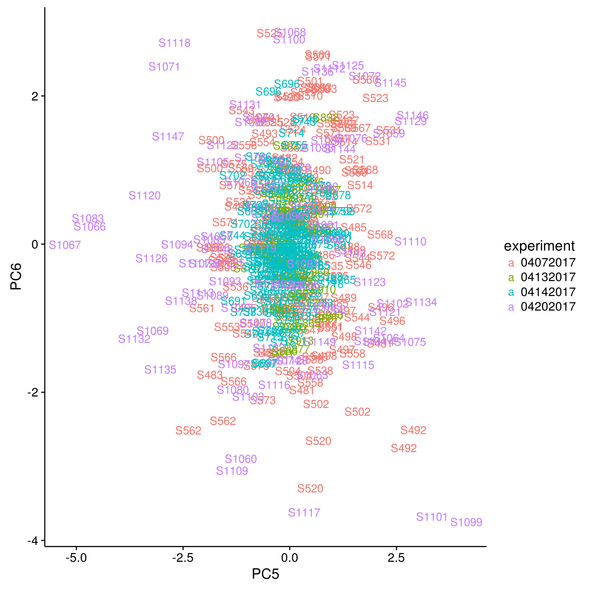
ggplot(pca_ercc, aes(x = PC5, y = PC6, color = annoERCC)) +
geom_text(aes(label = id))
Drosophila
Remove zeros.
mol_dm <- mol_dm %>%
select_if(function(col) is.character(col) || sum(col) > 0)
dim(mol_dm)[1] 1129 10900Convert to matrix.
mol_dm_mat <- mol_dm %>%
select(starts_with("FBgn")) %>%
tOnly keep fly genes which are observed in at least 50% of the samples.
mol_dm_mat <- mol_dm_mat[apply(mol_dm_mat, 1, present), ]
dim(mol_dm_mat)[1] 212 1129mol_dm_cpm <- cpm(mol_dm_mat, log = TRUE)
hist(rowMeans(mol_dm_cpm))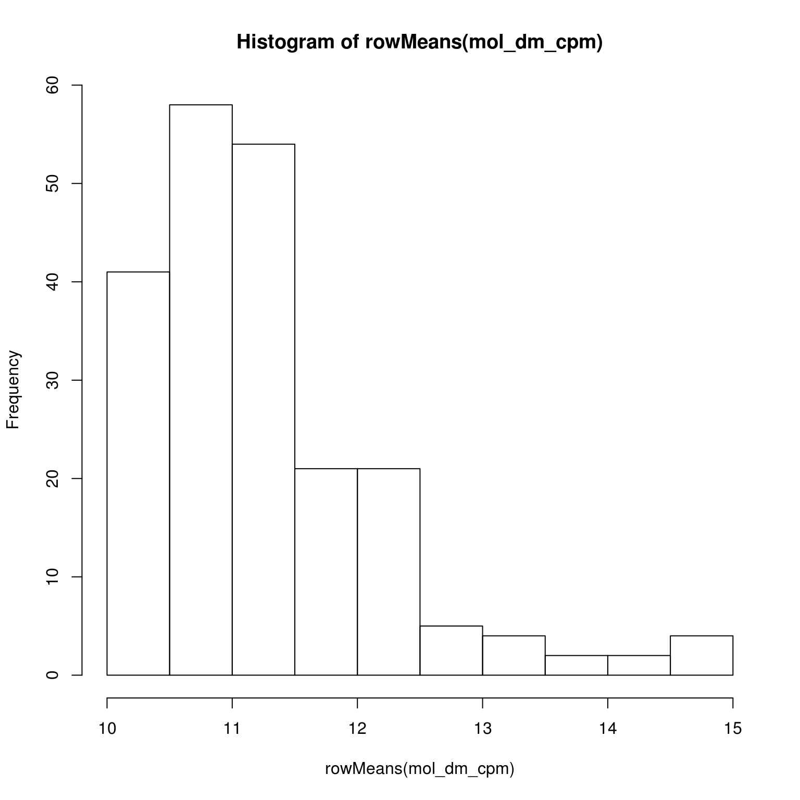
pca_dm <- prcomp(t(mol_dm_cpm), scale. = TRUE)
pca_dm <- cbind(mol_dm %>% select(experiment:index), pca_dm$x)ggplot(pca_dm, aes(x = PC1, y = PC2, color = experiment)) +
geom_text(aes(label = id))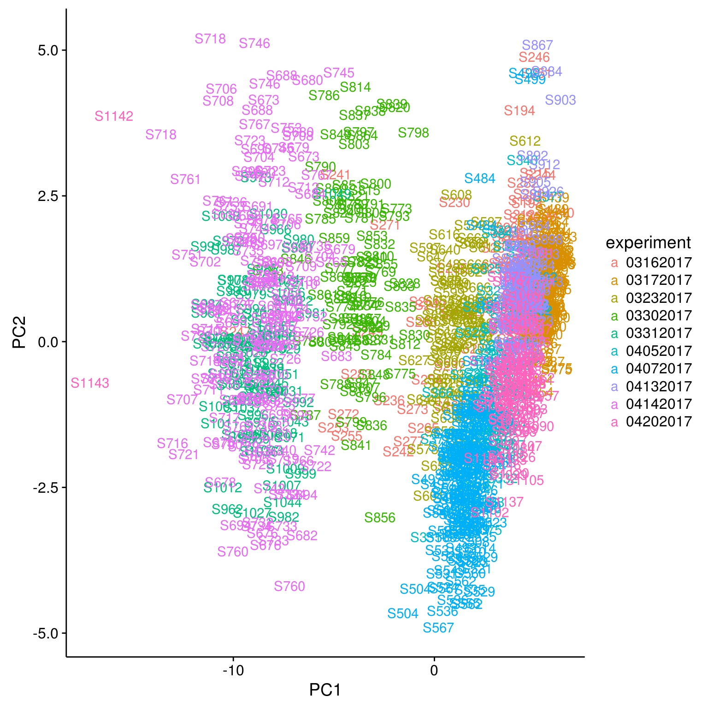
ggplot(pca_dm, aes(x = PC1, y = PC2, color = as.factor(fly))) +
geom_text(aes(label = id))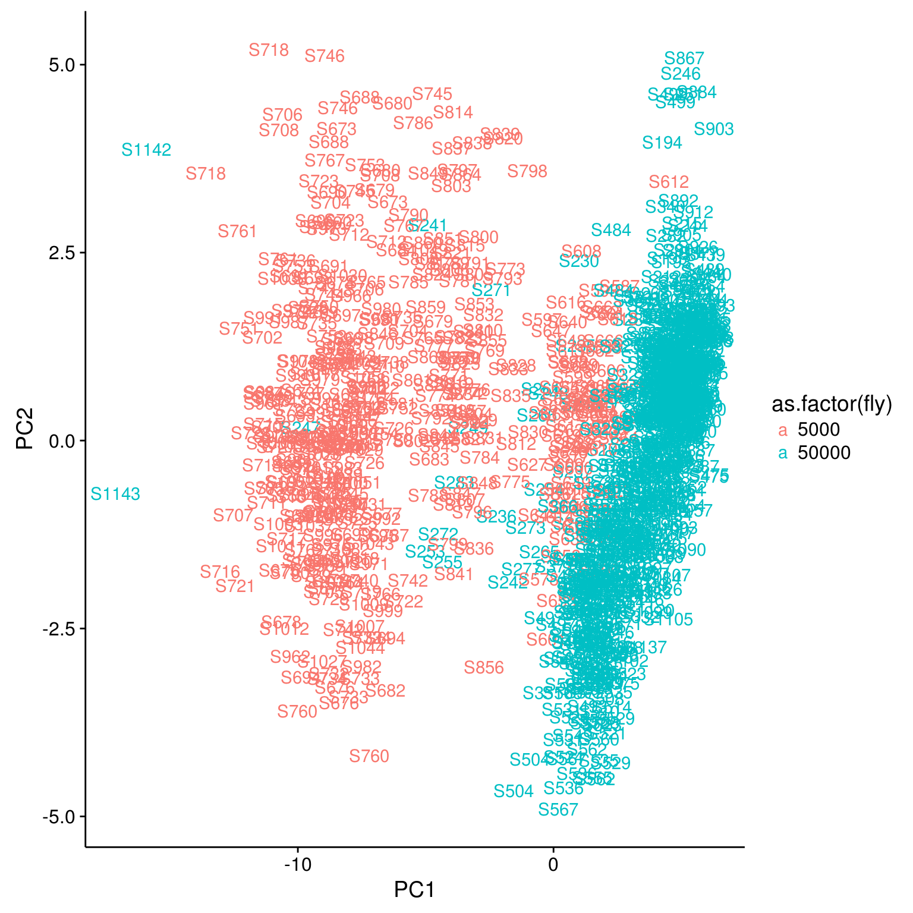
C. elegans
Remove zeros.
mol_ce <- mol_ce %>%
select_if(function(col) is.character(col) || sum(col) > 0)
dim(mol_ce)[1] 1129 11110Convert to matrix.
mol_ce_mat <- mol_ce %>%
select(starts_with("WBGene")) %>%
tOnly keep worm genes which are observed in at least 50% of the samples.
mol_ce_mat <- mol_ce_mat[apply(mol_ce_mat, 1, present), ]
dim(mol_ce_mat)[1] 3 1129mol_ce_cpm <- cpm(mol_ce_mat, log = TRUE)
# Remove samples with no observations for this subset
zeros_ce <- colSums(mol_ce_mat) > 0
mol_ce_cpm <- mol_ce_cpm[, zeros_ce]
hist(rowMeans(mol_ce_cpm))
pca_ce <- prcomp(t(mol_ce_cpm), scale. = TRUE)
pca_ce <- cbind(mol_ce %>% select(experiment:index) %>% filter(zeros_ce),
pca_ce$x)ggplot(pca_ce, aes(x = PC1, y = PC2, color = experiment)) +
geom_text(aes(label = id))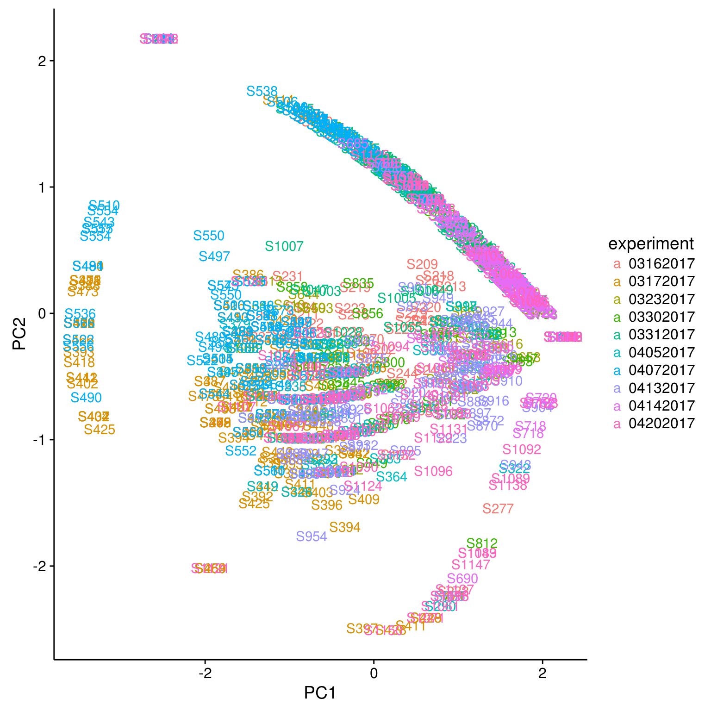
ggplot(pca_ce, aes(x = PC1, y = PC2, color = as.factor(worm))) +
geom_text(aes(label = id))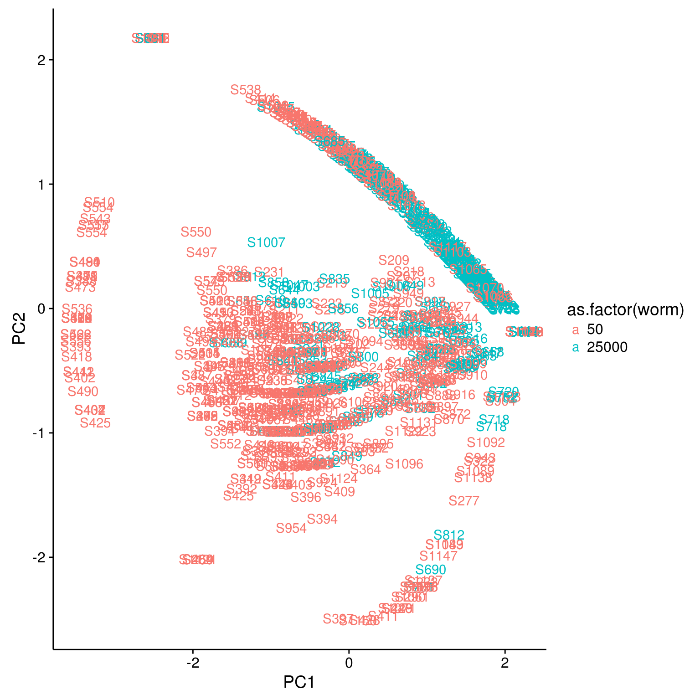
Human
Remove zeros.
mol_hs <- mol_hs %>%
select_if(function(col) is.character(col) || sum(col) > 0)
dim(mol_hs)[1] 1129 18344Convert to matrix.
mol_hs_mat <- mol_hs %>%
select(starts_with("ENSG")) %>%
tOnly keep human genes which are observed in at least 50% of the samples.
mol_hs_mat <- mol_hs_mat[apply(mol_hs_mat, 1, present), ]
dim(mol_hs_mat)[1] 4226 1129mol_hs_cpm <- cpm(mol_hs_mat, log = TRUE)
hist(rowMeans(mol_hs_cpm))
pca_hs <- prcomp(t(mol_hs_cpm), scale. = TRUE)
pca_hs <- cbind(mol_hs %>% select(experiment:index), pca_hs$x)ggplot(pca_hs, aes(x = PC1, y = PC2, color = experiment)) +
geom_text(aes(label = id))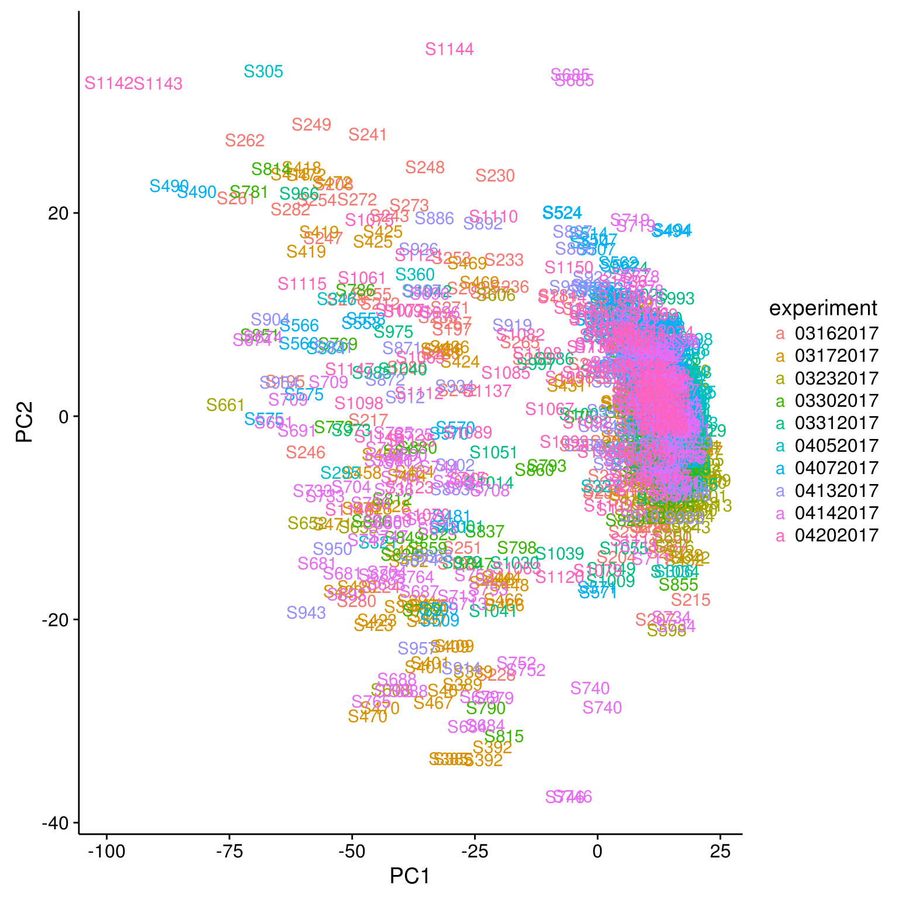
ggplot(pca_hs, aes(x = PC3, y = PC4, color = experiment)) +
geom_text(aes(label = id))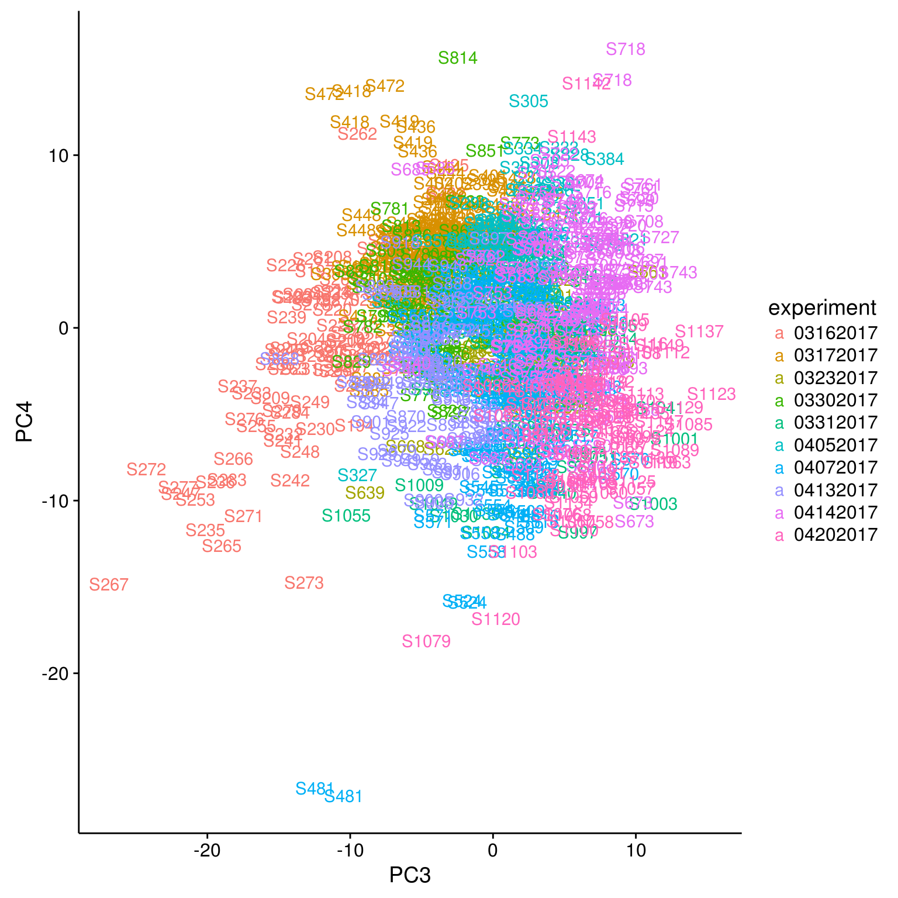
Session information
sessionInfo()R version 3.3.2 (2016-10-31)
Platform: x86_64-pc-linux-gnu (64-bit)
Running under: Scientific Linux 7.2 (Nitrogen)
locale:
[1] LC_CTYPE=en_US.UTF-8 LC_NUMERIC=C
[3] LC_TIME=en_US.UTF-8 LC_COLLATE=en_US.UTF-8
[5] LC_MONETARY=en_US.UTF-8 LC_MESSAGES=en_US.UTF-8
[7] LC_PAPER=en_US.UTF-8 LC_NAME=C
[9] LC_ADDRESS=C LC_TELEPHONE=C
[11] LC_MEASUREMENT=en_US.UTF-8 LC_IDENTIFICATION=C
attached base packages:
[1] parallel stats graphics grDevices utils datasets methods
[8] base
other attached packages:
[1] tidyr_0.6.1 stringr_1.2.0 readr_0.2.2
[4] edgeR_3.16.5 limma_3.30.13 dplyr_0.5.0
[7] cowplot_0.7.0 ggplot2_2.2.1 Biobase_2.34.0
[10] BiocGenerics_0.20.0
loaded via a namespace (and not attached):
[1] Rcpp_0.12.10 knitr_1.16 magrittr_1.5 munsell_0.4.3
[5] lattice_0.20-34 colorspace_1.3-2 R6_2.2.0 plyr_1.8.4
[9] tools_3.3.2 grid_3.3.2 gtable_0.2.0 DBI_0.6-1
[13] git2r_0.19.0 htmltools_0.3.6 yaml_2.1.13 lazyeval_0.2.0
[17] rprojroot_1.2 digest_0.6.12 assertthat_0.1 tibble_1.2
[21] evaluate_0.10 rmarkdown_1.6 labeling_0.3 stringi_1.1.5
[25] scales_0.4.1 backports_1.0.5 locfit_1.5-9.1 This R Markdown site was created with workflowr